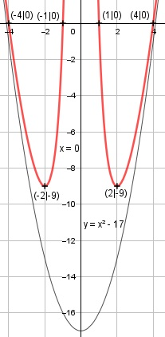

Aufgabe 115 x4 - 17x2 + 16 f(x) = ---------------- x2 Quotientenregel erste Ableitung: u = x4 - 17x2 + 16, u' = 4x2 - 34x v = x2, v' = 2x (4x2 - 34x)*x2 - 2x*(x4 - 17x2 + 16) f'(x) = -------------------------------------- x4 4x5 - 34x2 - 2x5 + 34x2- 32x f'(x) = ------------------------------- x4 2x5 - 32x x * (2x4 - 32) f'(x) = ----------- = ---------------- x4 x4 2x4 - 32 f'(x) = --------- x2 Quotientenregel zweite Ableitung: u = 2x4 - 32, u' = 8x2 v = x2, v' = 3x2 8x2 * x2 - 3x2 * (2x4 - 32) f''(x) = ----------------------------- x6 8x6 - 6x6 + 96x2 2x6 + 96x2 f''(x) = -------------------- = ------------ x6 x6 x2 * (2x4 + 96) 2x4 + 96 f''(x) = ------------------- = ------------ x6 x4 Zur Beurteilung, ob f'''(x) ≠ 0 : (Begründung siehe Aufgabe 105) u = 2x4 + 96, u' = 8x2 u' 8x2 8 f'''(x) = --- = ------- = --- ≠ 0 für alle x ≠ 0 v x4 x Polstellen, Nenner = 0: x2 = 0 |√ x1,2 = 0 Nenner = 0 und Zähler = 04 -17*02 + 16 = 16 ≠ 0 --> senkrechte Asymptote Definitionsbereich: -∞ < x < ∞, x ≠ 0 Zählergrad größer als Nennergrad --> Näherungskurve 16 f(x) = x4 - 17x2 + 16 : x2 = x2 - 17 + ---- -x4 x2 ------ -17x2 -(-17x2) ----------- 16 16 x2 - 17 + ---- geht gegen x2 - 17 für x --> ± ∞ x2 Wertebereich: -9 ≤ f(x) < ∞ (siehe Extrempunkte) Symmetrie zur y-Achse bzw. zum Punkt (0|0): (-x)4 - 17(-x)2 + 16 f(-x) = ---------------------- (-x)2 x4 - 17x2 + 16 f(-x) = ---------------- = f(x) x2 --> Achsensymmetrie x4 - 17x2 + 16 -f(-x) = - ---------------- ≠ f(x) x2 --> keine Punktsymmetrie Nullstellen: f(x) = 0 x4 - 17x2 + 16 ---------------- = 0 |*x2 x2 x4 - 17x2 + 16 = 0 Substitution z = x2 z2 -17z + 16 = 0 p, q - Formel p = -17, q = 16 z1,2 = z1,2 = -1 ± z1,2 = -1 ± z1,2 = 8,5 ± 7,5 z1 = 16 z2 = 1 Rücksubstituiert: x2 = 16 |ⱱ x1,2 = ± 4 x2 = 1 |ⱱ x3,4 = ± 1 N1(4|0), N2(-4|0), N3(1|0), N4(-1|0) Schnittpunkt mit der y-Achse: Es gilt x ≠ 0 --> kein Schnittpunkt Extrempunkte: f'(x) = 0 2x4 - 32 -------- = = 0 |*x2 x2 2x4 - 32 = 0|+32 2x4 = 32 | :2 x4 = 16 | x1,2 = ± 2 24 - 17 * 22 + 16 f(2) = f(-2) = ------------------- = -9 22 2(24 + 48) f''(2) = ------------- > 0 --> Tiefpunkt (2|-9) 24 2((-2)4 + 48) f''(-2) = -------------- > 0 (-2)4 --> Tiefpunkt (-2|-9) Wendepunkte: f''(x) = 0 2x4 + 96 ---------- = 0 |*x4 x4 2x4 + 96 = 0 |:2 x4 + 48 = 0 | -48 x4 = -48 | --> keine Lösung --> keine Wendepunkte Graph:
